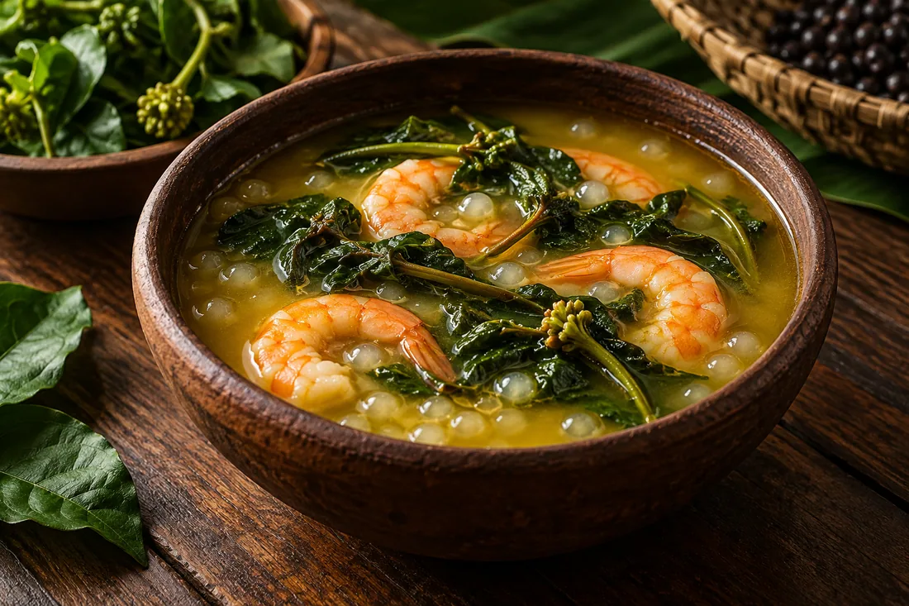
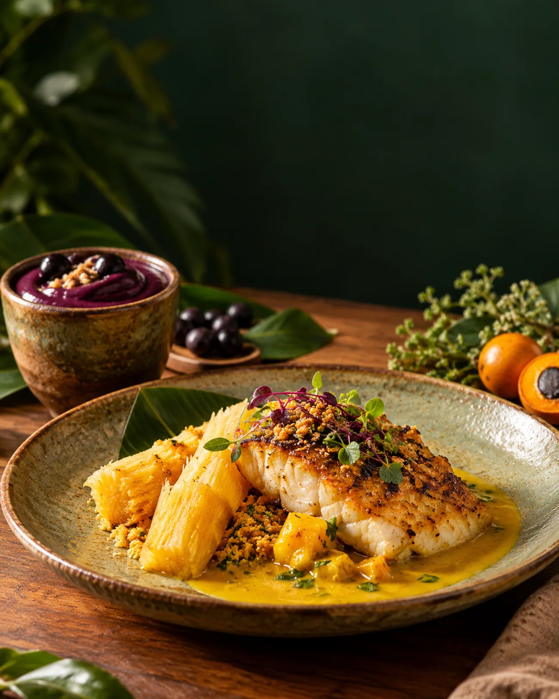
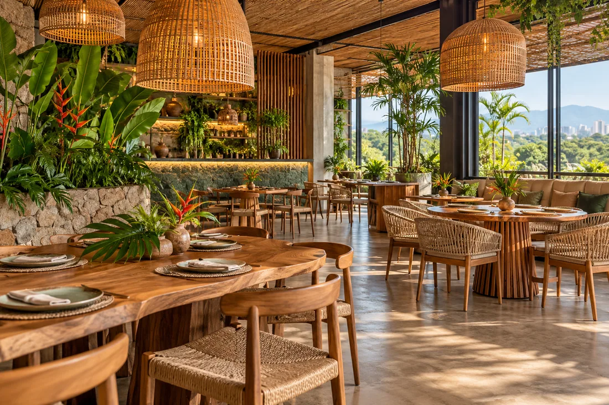

Clássico amazônico01
Tacacá
Caldo aromático de tucupi com jambu, goma de tapioca e camarão seco.
Imagem conceitual · ilustrativaSabores da floresta, apresentados com o espaço que merecem. Uma experiência digital para descobrir os pratos do Yasaí e seguir para o seu canal de pedido favorito.

Imagem conceitual · não oficialPratos citados no cardápio público conectado ao perfil oficial do Yasaí. Imagens conceituais; preços e disponibilidade podem mudar.
As imagens são conceituais e não retratam os pratos oficiais. Confira preços e disponibilidade com o restaurante. Referência sobre o projeto do restaurante ↗

Ambiente conceitual · não é foto do localO projeto de interiores publicado destaca madeira, bambu, fibras e vegetação como referências do Norte do Brasil. Esta imagem é uma interpretação gerada para o protótipo, não um registro do espaço atual.
Ver referência do projeto ↗Veja a localização, trace uma rota e fale com a equipe pelos canais públicos do restaurante.
O WhatsApp exibido é o número listado publicamente no perfil de navegação do Yasaí; confirme os canais e horários com o restaurante antes de publicar como site oficial.
Creme, verde profundo, dourado discreto e serifas de caráter. Uma leitura editorial e intimista, derivada do conceito visual fornecido.
Tons de papel, barro e mata com composição calorosa. Um caminho centrado na hospitalidade e na materialidade dos ingredientes.
Tipografia sem serifa em escala grande, cores botânicas e acento quente. Uma expressão mais gráfica e contemporânea.